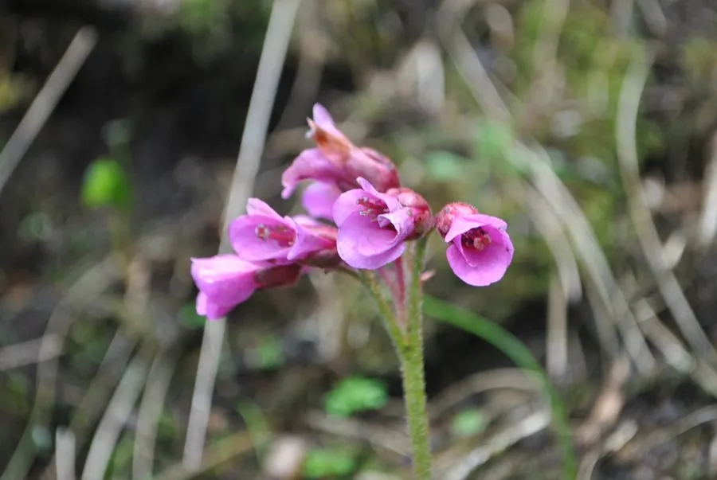

花卉与草本 · 植物界
岩白菜 Bergenia purpurascens

虎耳草科多年生草本，叶片肥厚、冬季转红，春季开粉紫色花，耐阴耐寒，是高山与林下常见观赏植物。
- 分类
- 门被子植物门纲木兰纲目虎耳草目科虎耳草科属岩白菜属
- 栖息环境
- 海拔 2000–4000 米的高山林下与岩石缝隙
- 地理分布
- 中国西南至喜马拉雅地区，云南、四川、西藏等地
- 保护级别
- 暂无评估；中国未列入国家重点保护野生植物名录
物种志
岩白菜为虎耳草科岩白菜属多年生草本，株高 20–40 厘米，地下具粗壮的根状茎。叶基生，倒卵形至圆形，肥厚革质，表面深绿色，冬季常转紫红色，边缘具细锯齿。花葶自叶丛抽出，聚伞花序着花数朵，花冠钟状，粉紫色至紫红色，花期 4–6 月；果实为蒴果。
岩白菜原产中国西南至喜马拉雅地区，生于海拔 2000–4000 米的高山林下与岩石缝隙，耐寒、耐阴。它喜凉爽湿润、半阴的环境，适宜疏松肥沃、排水良好的土壤。叶片肥厚、冬季转红，春季开粉紫色花，是高山与林下常见的观赏植物；根状茎可入药，有清热解毒、止血之效。栽培以分株繁殖为主，夏季需遮阴，避免高温积水。
形态与习性
- 株高20–40 厘米，根状茎粗壮
- 花期4–6 月，花粉紫色
- 果期花后结蒴果
- 叶色深绿色，冬季转紫红色
- 光照喜半阴，忌强光暴晒
- 水分喜湿润，忌积水
- 主要用途高山与林下观赏，根状茎入药
趣味知识
- 岩白菜的叶片肥厚革质，冬季会变成紫红色。
- 它原产高山地区，耐寒耐阴，适合岩石园栽培。
- 岩白菜的根状茎可入药，有清热解毒、止血之效。
- 夏季高温时需遮阴通风，否则叶片容易腐烂。